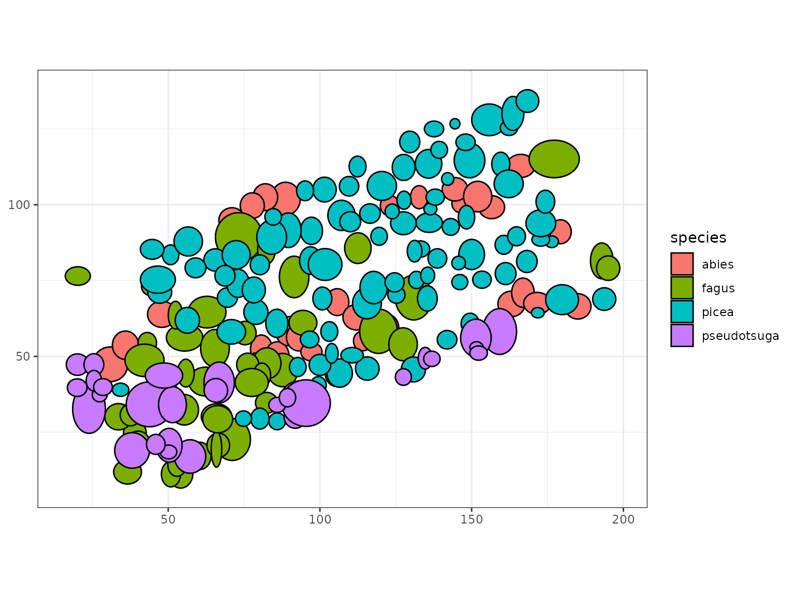
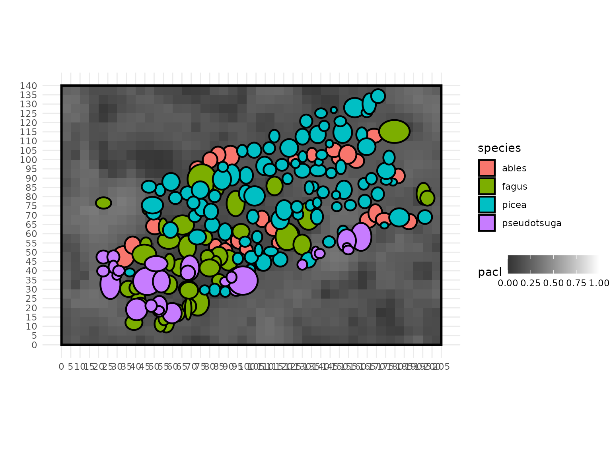

5 - More complex crown shapes
Represent the crowns with more complex, asymmetric shapes
5-irregular_crowns.RmdThis tutorial will explain how to represent the tree crown with more complex shapes. We will use fourth of ellispoid/paraboloid or eighth of ellispoid to represent the asymmetry of crowns. Here, we will base this tutorial on another real inventory: the Bechefa marteloscope, an mixed irregular
Understand asymmetric crown shapes
Fourth of an ellispoid/paraboloid
Both the paraboloid (“P”) and the ellipsoid (“E”) can be represented
with more details by splitting the crown into 4 different crown parts.
Indeed, we can represent more complex crown shapes with 4 fourth of
paraboloids (use the modality “4P” for the crown_type
column in the tree inventory) or with 4 fourth of ellispoid (use the
modality “4E”). Using 4 fourth of a volume allows considering different
crown radius between the 4 cardinal directions, that will be provided in
the tree inventory using the columns rn_m (crown radius
toward the north), rs_m (crown radius toward the south),
rw_m (crown radius toward the west), re_m
(crown radius toward the east).
When the user decides to use the “4P” and “4E” modality, the column
hmax_m still should not be provided, as the model computes
it automatically. As for “P” and “E” simple symmetric crown shapes, it
is set to the crown base height
()
when considering fourths of paraboloid “4P”, and set at the middle of
the crown when considering fourths of ellipsoids “4E”
().
Eighth of a paraboloid
The user can also represent an even more complex ellispoidal shape
using the modality “8E”. It allows representing the crown as an assembly
of 8 eighths of ellispoids to consider different heights for the top and
bottom crown parts . By doing so, the user must provide the four radius
as mentionned above, but must also provide hmax_m, which is
the height of the maximum crown radius (in meters).
Provide information for complex crown shapes
In this tutorial, we use “8E” of ellispoids for representing all the
crown shapes, whether for broadleaves or conifers species. Indeed,
several crown dimensions have been measured on the bechefa marteloscope:
crown radius in the four directions (rn_m,
rs_m, re_m, rw_m), tree height
(h_m), crown base height (hbase_m) and crown
maximum radius height (hmax_m). This allows to better
account for the variability in tree crown shapes and thus better
estimate light interception and competition.
head(SamsaRaLight::data_bechefa$trees, 20)
#> id_tree species x y dbh_cm crown_type h_m hbase_m hmax_m
#> 1 103 abies 163.1 67.3 68.43663 8E 38.5 16.6 28.2
#> 2 615 pseudotsuga 66.8 41.4 95.49297 8E 50.2 14.0 33.3
#> 3 102 pseudotsuga 159.2 58.2 111.72677 8E 48.2 10.8 27.1
#> 4 708 pseudotsuga 43.8 34.2 116.81973 8E 51.0 15.8 27.0
#> 5 707 pseudotsuga 51.4 34.1 99.94930 8E 50.5 16.0 26.7
#> 6 712 pseudotsuga 57.2 17.0 112.04508 8E 51.4 14.4 26.5
#> 7 714 pseudotsuga 50.3 20.7 99.94930 8E 50.0 15.4 26.2
#> 8 206 picea 127.7 101.5 46.15493 8E 34.4 13.7 26.0
#> 9 222 pseudotsuga 151.4 56.1 114.59156 8E 49.9 9.5 24.9
#> 10 608 picea 56.3 61.9 99.31268 8E 44.2 17.1 24.8
#> 11 113 abies 146.4 100.5 41.06198 8E 31.0 4.0 24.6
#> 12 312 picea 115.5 67.5 90.08170 8E 41.2 12.6 24.0
#> 13 522 pseudotsuga 92.8 35.7 102.81409 8E 49.5 17.1 23.7
#> 14 116 picea 142.1 108.5 34.37747 8E 28.8 16.5 23.6
#> 15 214 picea 133.1 85.4 48.06479 8E 36.5 15.0 23.5
#> 16 215 picea 138.7 82.3 49.65634 8E 33.9 13.9 23.5
#> 17 110 picea 150.0 83.6 57.29578 8E 33.1 15.7 23.5
#> 18 617 pseudotsuga 65.7 38.8 78.94085 8E 42.9 12.7 23.4
#> 19 4 picea 155.8 128.0 89.44508 8E 41.0 14.4 23.4
#> 20 104 abies 166.9 71.0 39.15212 8E 27.8 6.7 23.2
#> rn_m rs_m re_m rw_m crown_openess crown_lad
#> 1 4.32 4.12 3.70 5.20 0.035 0.6
#> 2 7.01 6.45 5.87 4.15 0.035 0.6
#> 3 8.38 6.72 4.69 6.51 0.035 0.6
#> 4 7.37 7.43 9.85 5.44 0.035 0.6
#> 5 6.73 5.16 3.40 5.76 0.035 0.6
#> 6 5.02 6.02 5.00 5.32 0.035 0.6
#> 7 5.60 5.57 3.12 5.40 0.035 0.6
#> 8 3.16 2.80 2.93 1.73 0.035 0.6
#> 9 5.83 6.52 6.90 3.15 0.035 0.6
#> 10 4.08 4.42 4.55 3.45 0.035 0.6
#> 11 3.43 2.84 3.78 2.05 0.035 0.6
#> 12 4.87 5.35 3.95 5.55 0.035 0.6
#> 13 6.11 6.11 5.70 5.95 0.035 0.6
#> 14 2.32 1.85 1.55 2.47 0.035 0.6
#> 15 3.13 2.24 3.59 2.55 0.035 0.6
#> 16 3.60 2.77 3.63 2.56 0.035 0.6
#> 17 5.23 4.72 4.28 4.18 0.035 0.6
#> 18 3.05 4.75 4.75 3.01 0.035 0.6
#> 19 4.02 6.41 6.08 5.46 0.035 0.6
#> 20 5.20 4.44 3.57 3.86 0.035 0.6It is difficult to observe the full crown asymmetry with 2D R plots :
we cannot observe different hmax, neither the 4 direction asymmetric
radius). A minima, we can represent a two-directionnal radius assymetry
by plotting the trees using the geom_ellipse() function of
the ggforce R package, by averaging the north/south radii,
and the east/west radii:
ggplot(SamsaRaLight::data_bechefa$trees,
aes(fill = species)) +
# Radius are averaged across south/north and east/west radii
geom_ellipse(mapping = aes(x0 = x,
y0 = y,
a = (re_m + rw_m) / 2,
b = (rn_m + rs_m) / 2,
angle = 0)) +
coord_equal() +
theme_bw()
Estimate light interception
For estimating the light interception, it works the same as with simple crowns.
Create the virtual stand
sl_stand <- SamsaRaLight::create_rect_stand(
trees = SamsaRaLight::data_bechefa$trees,
cell_size = 5,
core_polygon_df = SamsaRaLight::data_bechefa$core_polygon,
fill_around = TRUE
)Run SamsaraLight
sl_out <- SamsaRaLight::sl_run(
# Trees
trees = sl_stand$trees,
# Radiations
monthly_rad = SamsaRaLight::data_bechefa$radiations,
latitude = SamsaRaLight::data_bechefa$info[["latitude"]],
# Stand geometry
slope = SamsaRaLight::data_bechefa$info[["slope"]],
aspect = SamsaRaLight::data_bechefa$info[["aspect"]],
north_to_x_cw = SamsaRaLight::data_bechefa$info[["north_to_x_cw"]],
cell_size = sl_stand$info$cell_size,
n_cells_x = sl_stand$info$n_cells_x,
n_cells_y = sl_stand$info$n_cells_y,
# Transmission model (default is the turbid medium)
turbid_medium = TRUE,
# Use a torus system for representing plot edges (default to TRUE)
use_torus = TRUE
)Plot the output stand with irregular crowns
For the sake of representation, we plot here only the inventoried trees by specifying the “trees.only_inv” argument to TRUE. However, the light estimation has been done considering the filled virtual stand and the torus system.
plot_sl_output(sl_out,
cells.fill = "pacl",
cells.fill.palette = "light01",
trees.only_inv = TRUE)